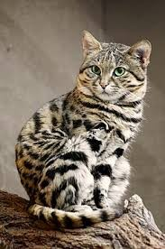

Коти
Цей сайт роскаже вам про котів та про 5 порід
Кішка — домашня тварина, одна з найпопулярніших «тварин-компаньйонів».
З погляду наукової систематики, домашня кішка - ссавець сімейства котячих загону хижих.

5 порід
1. Британський кіт

Британські коти, з’явившись в кінці 20-го століття,
завоювали популярність і любов по всьому світу. Це досить великі коти з чеширською посмішкою, великими очима і плюшевою шубкою.
З кожним роком селекціонери вдосконалюють породу і привносять все більшу різноманітність в окрас представників цієї породи кішок.
Тим часом вже зареєстровано понад 60 видів відтінків шерсті британців.
2. Сіамські коти
![]()
Країна походження породи Таїланд, колись мала назву Сіам. Сіамська кішка одна
з найвідоміших та найдавніших порід. Власне від сіамської кішки успадкували характерне забарвлення бірманська, гімалайська та регдолл.
3. Висловухі коти – шотландська висловуха

Історія виникнення породи шотландська висловуха Шотландських висловухих кішок найчастіше обирають успішні, впевнені у собі чоловіки.
Шотландських висловухих та шотландських прямовухих кішок у нас часто називають на англійський манер – скотіш фолд та скотіш страйт. Згадки про дивних котів із загнутими вперед вушками були ще кілька століть тому
4. Абісинська кішка.

Ця короткошерстна порода котів названа на честь країни звідки було вивезено котів від яких ведуть свій родовід усі теперішні представники абісинської породи. Абісинія – це колишня назва Ефіопії. Це давня порода і одна з кількох, що походять з Африки. Історія виникнення породи абісинська кішка. Абісинська кішка – порода давня, добре відома, але рідкісна.
5. Корніш-рекс.

Історія виникнення породи корніш-рекс. Зараз паралельно використовуються два стандарти породи корніш-рекс – американський та європейський. Країна походження породи кішок у каракулевій шубці – Великобританія, графство Корнуелл. У 1950 році міс Енісмор, яка займалась розведенням кролів на своїй фермі, знайшла кошеня з дуже не звичною шерстю. Вона назвала котика Каллінбакер та віднесла його до ветеринара.